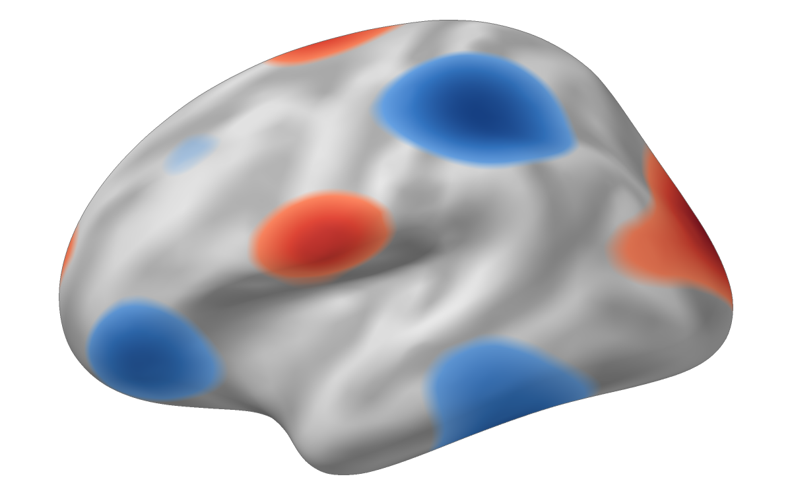
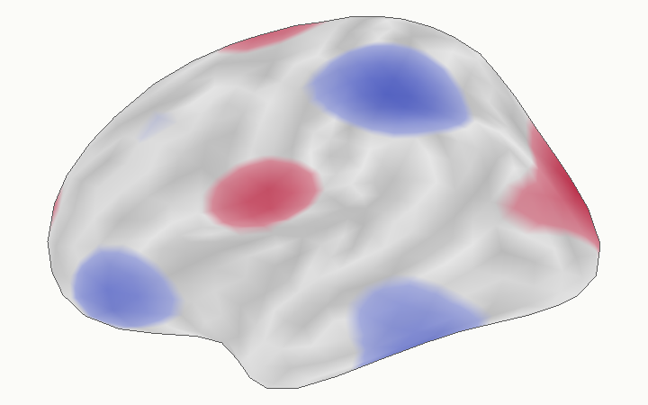
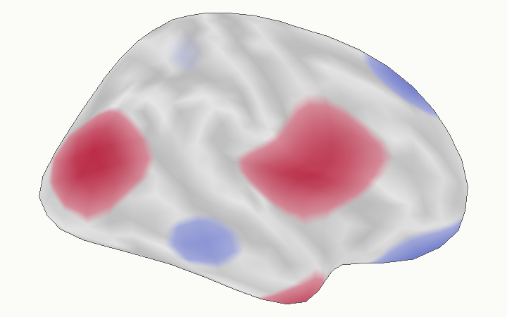
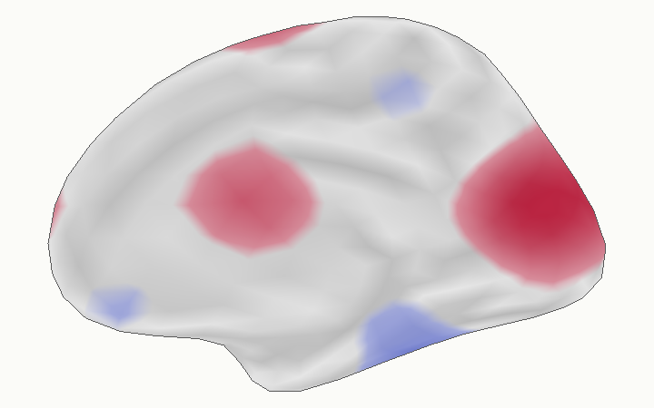
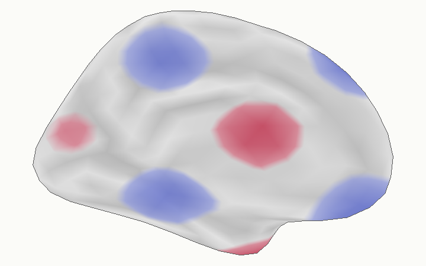

Publication-quality continuous surface figures
neurosurf authors
2026-08-13
Source:vignettes/surface-figures.Rmd
surface-figures.RmdYou have a continuous value at every cortical vertex–for example a t, z, thickness, or connectivity map–and need a static figure that remains scientifically interpretable after thresholding. The important distinction is that the value is a field on a triangle mesh, not a parcel label. A polished figure should therefore interpolate the scalar within each triangle, test visibility with a real depth buffer, and add anatomy without drawing atlas or occlusion lines over the result.
render_surface_rgba() is neurosurf’s deterministic,
headless primitive for that task. It returns an RGBA raster plus
diagnostic buffers and provenance; write_surface_rgba()
writes the result to PNG. Higher-level packages can compose several such
panels with vector labels and legends.
What are the inputs?
You need a display geometry and one numeric value per vertex. For anatomical context, use a curvature or sulcal-depth metric from a corresponding white, pial, or midthickness surface rather than computing curvature on the inflated display shape.
The package includes matching decimated fsaverage surfaces, which keep this example fast and offline.
inflated <- load_fsaverage_std8("inflated")
read_geom <- function(name) {
read_surf_geometry(system.file("extdata", name, package = "neurosurf"))
}
white_lh <- read_geom("std.8_lh.white.asc")
white_rh <- read_geom("std.8_rh.white.asc")Here a smooth coordinate-based field stands in for your measured statistic. The renderer treats it exactly like any other vertex-wise numeric vector.
example_statistic <- function(geometry) {
xyz <- coords(geometry)
value <- sin(xyz[, 2] / 18) + cos(xyz[, 3] / 14) +
0.7 * sin(xyz[, 1] / 12)
as.numeric(scale(value))
}
stat_lh <- example_statistic(inflated$lh)
stat_rh <- example_statistic(inflated$rh)How do you render one thresholded view?
Choose the threshold and colour limits as scientific inputs. In this
example, the colour scale stays fixed at [-2.5, 2.5], while
an opacity ramp softens only the visual transition immediately above
|z| = 1.
lh_lateral <- render_surface_rgba(
inflated$lh,
vertex_values = stat_lh,
anatomy_metric = curv_lh,
camera = "lateral",
threshold = 1,
tail = "two_sided",
limits = c(-2.5, 2.5),
alpha_ramp = 0.25,
antialias = 2
)
The colour at each covered sample comes from the barycentrically interpolated scalar. Thresholding and palette mapping happen after that interpolation, so a threshold boundary may cross a triangle instead of jumping from one mesh edge to the next. The per-sample z-buffer independently decides which folded surface fragment is visible.
How do you build the four canonical views?
Use the same limits, threshold, opacity, and anatomy convention in
every panel. The camera contract is explicit:
camera_mode = "canonical" is strict orthographic output,
while "presentation" adds a small declared obliquity.




The lateral and medial views differ because each panel rasterizes the
visible triangles from its own camera. Internal sulcal occlusion edges
are not drawn as outlines; outer_contour = TRUE marks only
cortex touching background that is connected to the image exterior.
Where do the medial wall and cortex mask enter?
A real cortex mask is a separate domain object, not a consequence of
parcel value zero. Pass one logical value per vertex. Triangles touching
a masked vertex never receive overlay colour. medial_wall
then controls whether the excluded domain is quietly shaded, omitted, or
outlined.
masked_panel <- render_surface_rgba(
inflated$lh,
vertex_values = statistic,
anatomy_metric = white_surface_curvature,
cortex_mask = cortex_label,
medial_wall = "shade"
)Atlas-aware callers such as neuroatlas::plot_brain() can
resolve the mask and its provenance from an atlas annotation. At this
low level, neurosurf requires the caller to supply the domain explicitly
rather than guessing that an atlas label of zero always means medial
wall.
How should a volume become a continuous surface field?
For a continuous image, use explicit trilinear sampling through the cortical ribbon. Interpolation, aggregation across depth, and tangential smoothing are separate choices. The following contract samples five depths, averages them, and applies no surface smoothing:
mapped <- vol_to_surf(
white_surface,
pial_surface,
statistic_volume,
fun = "avg",
sampling = "thickness",
interpolation = "linear",
depth = seq(0.1, 0.9, length.out = 5),
aggregate = "mean",
surface_smooth_fwhm = 0
)Use interpolation = "nearest" for discrete nearest-voxel
sampling. The historical Gaussian KNN behaviour remains available as
interpolation = "legacy". Categorical
aggregate = "mode" is intentionally incompatible with
linear interpolation.
Which renderer should you use?
- Use
render_surface_rgba()for deterministic, scalar-first static output in CI, Slurm, Quarto, or PDF workflows. It requires neither OpenGL nor a browser. - Use
surface_plot(),view_surface(), orsurfwidget()for interactive exploration, atlas inspection, and report widgets. Those paths provide rich 3D interaction, but they are not the scalar-threshold oracle for static continuous maps. - Use
neuroatlas::plot_brain(style = "stat_publication", static_backend = "cpu")when you need anatomical masks, curvature resolution, a four-view layout, orientation marks, and an overlay legend. - Use
neuromosaic::surf_montage()when the starting point is a statistic volume and the figure belongs in a reproducible report.
Atlas outlines remain useful when the atlas itself is the subject of the figure. They are deliberately not part of the default continuous-statistic view, where parcel boundaries would imply structure that is absent from the scalar field.
Next steps
-
vignette("displaying-surfaces")covers lower-level RGL rendering and local snapshots. -
vignette("interactive-surfaces")builds interactive bilateral report widgets withsurfwidget(). -
vignette("introduction-to-neurosurf")introducesSurfaceGeometry,NeuroSurface, and related data structures. -
?render_surface_rgba,?surface_threshold_segments, and?vol_to_surfdocument the complete computational contracts.